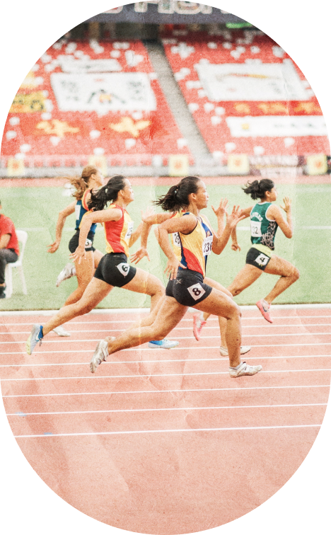

Sincethe 1952

Events 48+32
Athletics
Athletics has been contested at every Summer Olympics since the birth of the modern Olympic movement at the 1896 Summer Olympics. The athletics program traces its earliest roots to events used in the ancient Greek Olympics.